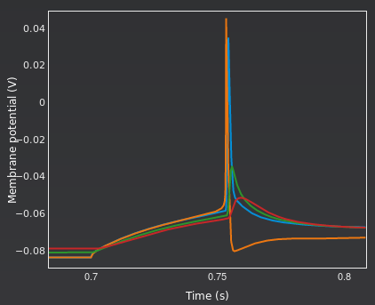

Analysing the spiking activity of the cell
A number of things can be seen from these traces:
Not all parts of the cell have the same resting membrane potential
This is due to the different complement of ion channels in different parts of the cell
The action potential initiates in the axon
This can be seen by zooming in on the first spike, as shown below. The orange trace for the axon clearly peaks before the red of the soma.

The action potential backpropagates into the dendrite
It is however quite attenuated when it reaches the apical dendrite tip.